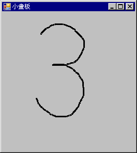

C# 視窗程式：繪圖功能
畫圖功能示範
教學錄影：C# 畫圖功能示範 -- http://youtu.be/8aAql8R4WSg
專案下載：https://dl.dropbox.com/u/101584453/cs/code/PaintDemo.zip
using System;
using System.Collections.Generic;
using System.ComponentModel;
using System.Data;
using System.Drawing;
using System.Linq;
using System.Text;
using System.Windows.Forms;
namespace WindowsFormsApplication1
{
public partial class Form1 : Form
{
Graphics g;
Pen pen;
Font font;
Brush brush;
public Form1()
{
InitializeComponent();
g = this.CreateGraphics();
pen = new Pen(Color.Black, 3);
font = new Font("標楷體", 16);
brush = new SolidBrush(Color.Black);
}
private void Form1_Paint(object sender, PaintEventArgs e)
{
g.DrawLine(pen, new Point(1, 1), new Point(300, 100));
g.DrawLine(pen, new Point(100, 1), new Point(300, 100));
g.DrawRectangle(pen, new Rectangle(50, 50, 100, 100));
g.DrawString("Hello! 你好！", font, brush, new PointF(150.0F, 150.0F));
Image image = Image.FromFile("../../ccc.jpg");
g.DrawImage(image, new Point(200, 200));
}
}
}小畫板
教學錄影： * C# 小畫板 (2) -- http://youtu.be/HkOkWRQ_Ad4 * C# 小畫板 (3) -- http://youtu.be/VXaQu_yYu08
專案下載：https://dl.dropbox.com/u/101584453/cs/code/Painter.zip

小畫板執行畫面
using System;
using System.Collections.Generic;
using System.Drawing;
using System.Windows.Forms;
namespace Painter
{
public partial class Form1 : Form
{
Graphics g; // 繪圖區
Pen pen; // 畫筆
bool isMouseDown = false; // 紀錄滑鼠是否被按下
List<Point> points = new List<Point>(); // 紀錄滑鼠軌跡的陣列。
public Form1()
{
InitializeComponent();
g = this.CreateGraphics(); // 取得繪圖區物件
pen = new Pen(Color.Black, 3); // 設定畫筆為黑色、粗細為 3 點。
}
private void Form1_MouseDown(object sender, MouseEventArgs e)
{
isMouseDown = true; // 滑鼠被按下後設定旗標值。
points.Add(e.Location); // 將點加入到 points 陣列當中。
}
private void Form1_MouseMove(object sender, MouseEventArgs e)
{
if (isMouseDown) // 如果滑鼠被按下
{
points.Add(e.Location); // 將點加入到 points 陣列當中。
// 畫出上一點到此點的線段。
g.DrawLine(pen, points[points.Count - 2], points[points.Count - 1]);
}
}
private void Form1_MouseUp(object sender, MouseEventArgs e)
{
points.Add(new Point(-1, -1)); // 滑鼠放開時，插入一個斷點 (-1,-1)，以代表前後兩點之間有斷開。
isMouseDown = false; // 滑鼠已經沒有被按下了。
}
}
}